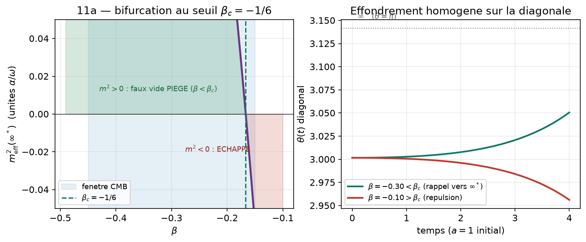
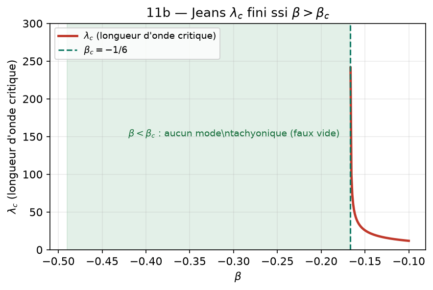
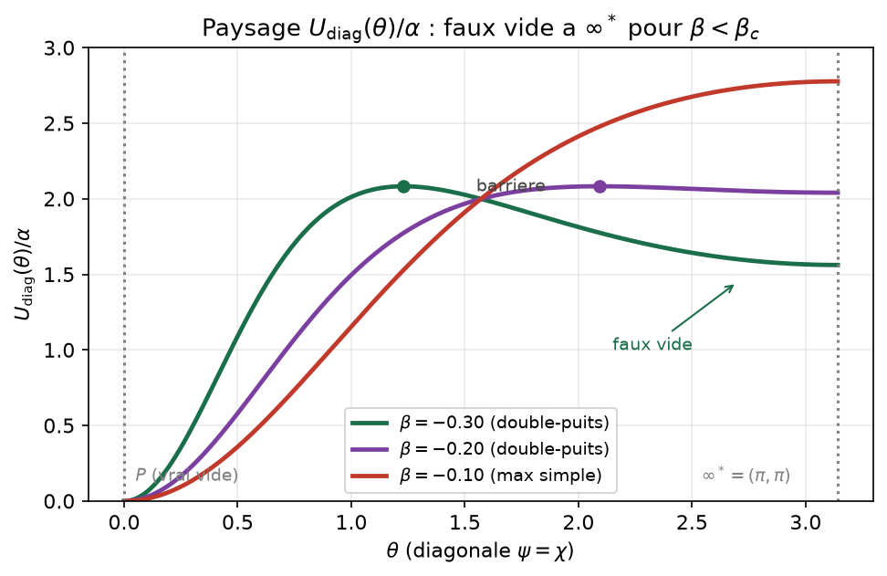
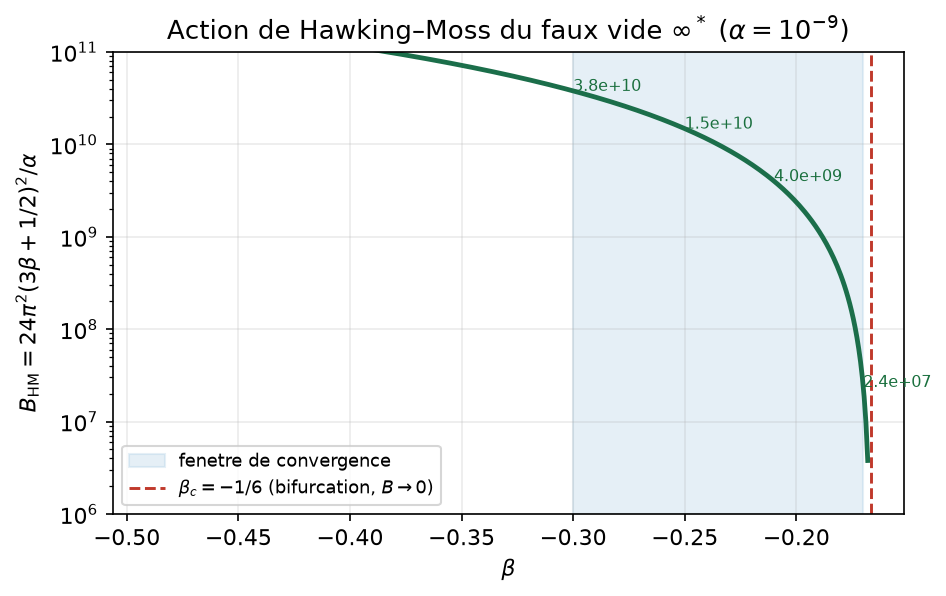
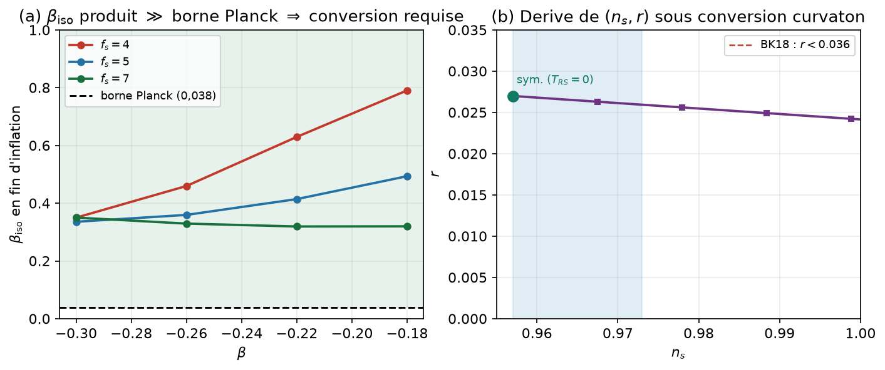
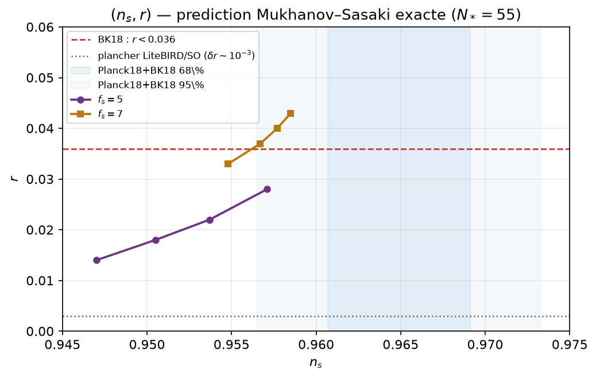

Unité 4 — Effondrement gravitationnel, faux vide métastable, isocourbure et spectre Mukhanov–Sasaki exact
Introduction
Le programme explore une hypothèse géométrique unique : les axes d’échelle, habituellement non compacts, sont des cercles. L’échelle de Planck (pôle \(P\)) et une échelle « unifiée » (pôle \(\infty^*\)) deviennent deux pôles d’une même variété, l’un spatial (\(\psi\), face gravitationnelle), l’autre temporel (\(\chi\), face quantique). Portée : non pas résoudre l’unification, mais proposer une direction cohérente et falsifiable, honnêtement étiquetée.
Le cadre en une page
Action (cadre de Jordan) : \[\begin{equation} S=\int\!\sqrt{-g}\Big[\tfrac12 f R-\tfrac12\omega\big((\partial\psi)^2+(\partial\chi)^2\big)-V\Big],\quad f=1+\beta(\cos\psi+\cos\chi),\ \ V=\alpha(2-\cos\psi-\cos\chi),\ \ \omega=f_s^2. \tag{1} \end{equation}\] La carte conforme \(\tilde g_{\mu\nu}=f g_{\mu\nu}\) (\(\Omega^2=f\)) ramène au cadre d’Einstein, avec potentiel et métrique de l’espace des champs \[\begin{equation} U=\frac{V}{f^2},\qquad \mathcal{G}_{ab}=\frac1f\Big[\omega\,\delta_{ab}+\tfrac32\frac{f_{,a}f_{,b}}{f}\Big]. \tag{2} \end{equation}\] Deux faits exacts [preuve] : (a) santé (pas de fantôme) \(f>0\Leftrightarrow\beta\in(-\tfrac12,+\tfrac12)\) ; (b) le seuil de clôture, fixé par le Hessien diagonal exact (SymPy) au pôle \(\infty^*=(\pi,\pi)\) (\(f=1-2\beta\)), point fixe de l’isométrie d’échange \(\psi\leftrightarrow\chi\) : \[\begin{equation} m^2_{\rm eff}(\infty^*)=-\frac{\alpha(1+6\beta)}{\omega(1-2\beta)^2},\qquad U(\infty^*)=\frac{4\alpha}{(1-2\beta)^2},\qquad \boxed{\beta_c=-1/6}. \tag{0} \end{equation}\] Le long de la diagonale \(\psi=\chi=\theta\) (\(f=1+2\beta\cos\theta\)), \[\begin{equation} U_{\rm diag}(\theta)=\frac{2\alpha(1-\cos\theta)}{(1+2\beta\cos\theta)^2},\qquad K_\parallel=\frac{2\omega}{f}+\frac{6\beta^2\sin^2\theta}{f^2},\qquad(\beta_{\rm eff}=2\beta). \tag{3} \end{equation}\]
Récapitulatif (Unités 1–3).
[preuve][numérique] À champ gelé, la gravité d’Einstein émerge (\(G_{\rm eff}=1/8\pi f\)) ; la branche \(\psi\equiv-\pi\) est exactement Schwarzschild–de Sitter ; aucun trou noir régulier statique (clôture). L’existence quantique intermittente est unitaire, \(\hat H_{\rm eff}=\varepsilon\hat H_{\rm sys}\), \(\varepsilon=\langle\cos^2(\chi/2)\rangle=E(k)/K(k)\), période \(\tau_0=2\pi\sqrt{\omega/\alpha}\approx3{,}5\times10^{-37}\) s. La bande inflationnaire \((n_s,r)\) est précisée ci-dessous (spectre Mukhanov–Sasaki). Signature propre : \(\beta(\text{CMB})=\beta(\text{clôture})\).
Effondrement et bifurcation au seuil \(\beta_c\)
Effondrement homogène : la bifurcation (11a)
[numérique][preuve] Dans un domaine homogène en contraction (\(H<0\)), le diagnostic \(\ddot\psi(0)\propto-(1+6\beta)\) et la masse effective au pôle basculent exactement à \(\beta_c=-1/6\) : \(\beta<\beta_c\Rightarrow\infty^*\) minimum (piégé) ; \(\beta>\beta_c\Rightarrow\) maximum (échappe) (Fig. 1, gauche). Limite honnête [preuve] : l’anti-friction (\(H<0\)) finit par déloger le champ même du côté stable (Fig. 1, droite) — le vrai piégeage est inhomogène (§3.2).

Perturbations inhomogènes : le gradient stabilise (11b)
[preuve] On linéarise \(\delta\varphi_k\) sur un fond de Sitter contractant gelé à \(\infty^*\) : le gradient \(k^2/a^2\) est strictement stabilisant ; l’instabilité tachyonique exige \(m^2_{\rm eff}<0\) (\(\beta>\beta_c\)). D’où une longueur de Jeans \(\lambda_c\) finie seulement pour \(\beta>\beta_c\) (Fig. 2, gauche). Pour \(\beta<\beta_c\), aucun mode tachyonique \(\Rightarrow\) \(\infty^*\) linéairement stable, rémanent admissible. Les modes diagonal et entropique basculent ensemble (Hessien isotrope, \(U_{\psi\chi}=0\)). Vérifié SymPy.

Le rémanent comme faux vide de Sitter, et sa durée de vie
Le paysage de potentiel
[preuve] Sur la diagonale, les extrema de \(U\) sont : le vrai vide \(P\) (\(\theta=0\), \(U=0\)), le faux vide \(\infty^*\) (\(\theta=\pi\), \(U(\infty^*)=4\alpha/(1-2\beta)^2\)), et une barrière interne en \(\cos\theta^*=(1+4\beta)/(2\beta)\), qui n’existe que pour \(\beta\in(-\tfrac12,-\tfrac16)\). À \(\beta_c\), la barrière fusionne avec \(\infty^*\) (bifurcation). Pour \(\beta<\beta_c\), \(U\) est un double-puits (Fig. 3). La substitution de \(\cos\theta^*\) dans (3) se simplifie exactement : \[\begin{equation} U(\theta^*)=-\frac{\alpha}{4\beta(1+2\beta)}\ (>0\ \text{pour}\ \beta\in(-\tfrac12,-\tfrac16)). \tag{4} \end{equation}\]

Régime d’instanton : Hawking–Moss, pas Coleman–De Luccia
[numérique] La décroissance d’un faux vide de Sitter procède soit par bulle de Coleman–De Luccia (CDL), soit par saut homogène de Hawking–Moss (HM). Le critère de Batra–Kleban stipule que l’instanton CDL n’existe que si la courbure tachyonique canonique au sommet vérifie \(|m^2_{\rm top}|/H^2_{\rm top}>4\). Le calcul donne, sur toute la fenêtre \(\beta\in[-0{,}30;-0{,}17]\) et \(f_s\in\{4,5,7\}\), \[\begin{equation} \frac{|m^2_{\rm top}|}{H^2_{\rm top}}\ \approx\ \frac{3}{4f_s^2}\ \sim\ 6\times10^{-4}\text{ à }7\times10^{-2}\ \ll\ 4. \tag{5} \end{equation}\] La barrière, étalée sur une excursion sur-planckienne (\(\Delta\varphi_c\sim f_sM_{\rm Pl}\)), est trop plate devant la courbure de Sitter : seul Hawking–Moss opère, CDL n’existe pas.
Action exacte et durée de vie
[preuve] (SymPy). L’action HM, \(B_{\rm HM}=24\pi^2M_{\rm Pl}^4\big[1/U(\infty^*)-1/U(\theta^*)\big]\), se réduit exactement à \[\begin{equation} \boxed{\,B_{\rm HM}(\beta)=\frac{24\pi^2}{\alpha}\Big(3\beta+\tfrac12\Big)^2=\frac{6\pi^2}{\alpha}(6\beta+1)^2\,}\qquad(M_{\rm Pl}=1). \tag{6} \end{equation}\] Le facteur \((3\beta+\tfrac12)^2\) s’annule exactement à \(\beta=-1/6=\beta_c\) : barrière et faux vide fusionnent, l’exposant tombe à zéro. C’est une vérification de cohérence interne forte avec le seuil (0), obtenue par un calcul indépendant.
[numérique] Avec \(\alpha\sim10^{-9}M_{\rm Pl}^4\) (échelle GUT, fixée par \(A_s\), cf. §6), \(B_{\rm HM}\) varie fortement avec \(\beta\) (Fig. 4, Tab. 1). La durée de vie en temps de Hubble est \(\sim e^{B}\) : pratiquement éternelle sur toute la fenêtre.
| \(\beta\) | \(B_{\rm HM}\) (\(\alpha=10^{-9}\)) | survie \(\sim e^B\) (temps de Hubble) | régime |
|---|---|---|---|
| \(-0{,}30\) | \(3{,}8\times10^{10}\) | \(10^{1{,}6\times10^{10}}\) | faux vide robuste |
| \(-0{,}25\) | \(1{,}5\times10^{10}\) | \(10^{6{,}4\times10^{9}}\) | robuste |
| \(-0{,}21\) | \(4{,}0\times10^{9}\) | \(10^{1{,}7\times10^{9}}\) | robuste |
| \(-0{,}17\) | \(2{,}4\times10^{7}\) | \(10^{1{,}0\times10^{7}}\) | faible mais éternel |
| \(-1/6\) | \(0\) | — | bifurcation : faux vide disparaît |

Conclusion (métastabilité).
La métastabilité passe de [conjecture] à [preuve] (forme close de \(B\)) \(+\) [numérique] (régime HM, durées de vie). Reste [ouvert] : le préfacteur fluctuationnel du taux, et le raccordement à l’interprétation « trou noir régulier métastable » (dépend de la sélection dynamique).
Trajectoire à deux champs et isocourbure
La diagonale est géodésique : pas de transfert pendant l’inflation
[preuve] La bande \((n_s,r)\) avait d’abord été obtenue par une réduction mono-champ (axe \(\chi\) gelé, \(U(\psi)=\alpha(1-\cos\psi)/(1+\beta\cos\psi)^2\)) — le principal caveat de la prédiction. On lève ici cette hypothèse en traitant les deux champs. Posant \(\psi=\theta+\delta\), \(\chi=\theta-\delta\), la symétrie d’échange \(\psi\leftrightarrow\chi\) impose \(\partial U/\partial\delta|_{\delta=0}=0\) : la diagonale \(\psi=\chi\) est une trajectoire protégée, et, comme ensemble des points fixes de l’isométrie d’échange, totalement géodésique. (SymPy.) \(f,V,\mathcal{G}\) étant symétriques sous \(\psi\leftrightarrow\chi\), la composante entropique du gradient s’annule identiquement sur la diagonale : \[\begin{equation} V_{,\psi}-V_{,\chi}=\alpha(\sin\psi-\sin\chi)\ \xrightarrow{\psi=\chi}\ 0. \tag{7} \end{equation}\] La trajectoire est donc une géodésique de l’espace des champs : le taux de virage \(\dot\theta_\perp=0\), donc le transfert entropie\(\to\)adiabatique pendant l’inflation est nul, \(T_{RS}=0\). La courbure \(\mathcal{R}\) est conservée super-horizon et n’est pas contaminée par le secteur entropique. La normalisation cinétique entropique vaut exactement \(K_\perp=2\omega/f\).
Le spectre adiabatique se décale : levée de la réduction mono-champ
[numérique] Le long de la diagonale, le champ adiabatique voit \(U_{\rm diag}\) avec un couplage effectif \(\beta_{\rm eff}=2\beta\) (éq. 3), ce qui rend \(n_s\) plus rouge d’environ \(0{,}003\)–\(0{,}007\) par rapport à la réduction mono-champ :
| \(\beta\) | mono-champ \((n_s,r)\) | diagonale \((n_s,r)\) |
|---|---|---|
| \(-0{,}45\) | \((0{,}955;\,0{,}022)\) | \((0{,}948;\,0{,}019)\) |
| \(-1/3\) | \((0{,}959;\,0{,}033)\) | \((0{,}955;\,0{,}031)\) |
| \(-0{,}30\) | \((0{,}960;\,0{,}036)\) | \((0{,}957;\,0{,}036)\) |
| \(-0{,}15\) | \((0{,}962;\,0{,}055)\) | \((0{,}962;\,0{,}063)\) |
(roulement lent, comparaison de réduction ; le spectre exact Mukhanov–Sasaki de la diagonale est donné au §6, Tab. 2.) La fenêtre survivante se déplace vers les \(\beta\) moins négatifs : l’extrémité \(\beta=-0{,}45\) sort (\(n_s=0{,}948\) trop bas). Le décalage (\(\sim0{,}005\) en \(n_s\)) est de l’ordre de la barre d’erreur de Planck — non négligeable. C’est la trajectoire diagonale, non la réduction mono-champ, qui fournit la prédiction de référence (§6).
Masse entropique covariante et isocourbure produite
[preuve][numérique] Avec le Hessien covariant \(V_{;ss}=\hat e_s^a\hat e_s^b(\nabla_a\nabla_b V)\) et la courbure scalaire de l’espace des champs \(R_{\rm fs}\) (toutes deux calculées exactement, cf. scripts), la masse entropique est \(m^2_s=V_{;ss}+\varepsilon\,R_{\rm fs}H^2\) (le terme de virage \(\propto\dot\theta_\perp\) étant nul). Sur la fenêtre de convergence, \(m^2_s>0\) (la diagonale est une vallée, donc un attracteur : le champ ne s’en échappe pas) mais \(|m^2_s|\lesssim0{,}02\,H^2\) : le mode entropique est léger, quasi invariant d’échelle (\(n_{\rm iso}-1\approx\pm0{,}01\)). La cause est physique : le grand \(f_s\) qui rend l’inflation viable alourdit le terme cinétique et allège d’autant le mode entropique. Étant léger et découplé, il est amplifié comme un spectateur jusqu’à \[\begin{equation} \beta_{\rm iso}\ \approx\ 0{,}3\text{–}0{,}8\quad\text{en fin d'inflation},\qquad\text{soit }10\text{–}20\times\text{ la borne de Planck }(\beta_{\rm iso}<0{,}038). \tag{8} \end{equation}\] La valeur est chiffrée sur la Fig. 5a. Fait crucial : \(P_S\approx P_R\) à la production — l’entropie n’est pas un spectateur négligeable.
Conversion au réchauffement : le point ouvert, chiffré
[conjecture] À la fin de l’inflation, \(\mathcal{R}=\mathcal{R}_*\), \(S=T_{SS}S_*\). La transition au réchauffement agit via une matrice de transfert \(\delta N\) : \(\mathcal{R}_f=\mathcal{R}+\mathcal{T}_{RS}S\), \(S_f=\mathcal{T}_{SS}S\). Deux limites (Fig. 5b) :
Réchauffement symétrique (couplage universel). Le couplage matière universel déjà adopté dans le cadre (branche \(U\)-conforme, \(\eta=0\), qui assure le passage des bornes d’horloges atomiques et de quasars) fait que \(\psi\) et \(\chi\) se thermalisent à l’identique : aucune espèce séparée ne porte l’isocourbure \(\psi\)–\(\chi\), qui se convertit en adiabatique (type curvaton). Alors \(\mathcal{T}_{SS}\to0\Rightarrow\beta_{\rm iso}\to0\) et \(\mathcal{T}_{RS}\to0\Rightarrow(n_s,r)\) inchangé. Cohérence structurelle non recherchée : le même choix qui passe les tests de laboratoire évite aussi l’isocourbure observable. Limite physiquement motivée, mais conditionnée à une symétrie \(\psi\leftrightarrow\chi\) exacte au réchauffement.
Réchauffement asymétrique (\(\Gamma_\psi\neq\Gamma_\chi\)) : conversion de type curvaton, \(\mathcal{T}_{RS}\neq0\). Comme \(P_S\approx P_R\), l’effet est \(O(1)\) : pour \((\beta{=}{-}0{,}20,f_s{=}5)\), \((n_s,r)\) dérive de \((0{,}957;0{,}027)\) à \((0{,}998;\!\to\!0)\) selon le degré de conversion, passant par le centre de Planck à conversion modérée (\(\sin^2\Theta\approx0{,}19\)).

Conclusion (isocourbure).
Acquis [preuve] : \(\dot\theta_\perp=0\), \(T_{RS}=0\) (pas de contamination inflationnaire). Acquis [numérique] : masse entropique légère, \(\beta_{\rm iso}\sim0{,}3\)–\(0{,}8\gg\) Planck à la production. Le couplage universel rend la limite symétrique — isocourbure convertie en adiabatique, donc évitée — la plus naturelle [conjecture]. Reste [ouvert] : le modèle de réchauffement (taux \(\Gamma_\psi,\Gamma_\chi\), transport \(\delta N\)) qui chiffre la conversion et son éventuel décalage de \((n_s,r)\) ; tant qu’il n’est pas fait, la prédiction diagonale reste une première approximation.
Clarifications.
[numérique] La masse canonique du champ près de \(P\) vaut \(m_\varphi\approx1{,}9\times10^{13}\) GeV (\(\sim10^{55}H_0\)) : \(\sim55\) ordres trop lourd pour la quintessence. Il relaxe au vide (\(\varepsilon=1\), \(\Lambda_{\rm champ}\to0\)) ; l’énergie noire est un secteur séparé (le problème de la constante cosmologique n’est pas résolu). Le pont de Page–Wootters tient au cas non commutant à \(\sim10^{-22}\) près (\(\hat H_{\rm eff}(t)=\varepsilon\hat H_{\rm sys}(t)\), correction \(\sim\tau_0\omega_{\rm sys}\)).
Spectre Mukhanov–Sasaki exact et fixation de \(\alpha\)
Méthode
[numérique] Puisque \(T_{RS}=0\) (§5), le spectre adiabatique est effectivement à un champ le long de la diagonale. On résout l’équation de Mukhanov–Sasaki pour la courbure comobile \(\mathcal{R}_k\) en e-folds, \[\begin{equation} \mathcal{R}_k''+\big(3-\varepsilon_H+\tfrac{d\ln\varepsilon_H}{dN}\big)\mathcal{R}_k'+\Big(\frac{k}{aH}\Big)^2\mathcal{R}_k=0, \tag{9} \end{equation}\] avec conditions de Bunch–Davies sous-horizon et lecture du plateau super-horizon, sur un fond intégré exactement (sans approximation slow-roll). Le pivot est pris à \(N_*=55\). Le tenseur suit la relation de cohérence \(r=16\varepsilon_H\) (exacte à \(<1\%\) ici), \(n_t=-r/8\).
Résultats
[numérique] La normalisation scalaire est vérifiée (\(P_R/P_R^{\rm SR}\approx1{,}03\), l’écart étant la correction MS). La correction au \(n_s\) est sous-pourcent et systématique (vers le bleu, \(+0{,}0006\) à \(+0{,}0009\)). En fixant \(\alpha\) par \(A_s=2{,}1\times10^{-9}\) : \[\begin{equation} \alpha\approx(2\text{–}8)\times10^{-10}M_{\rm Pl}^4,\qquad V^{1/4}\approx1{,}1\text{–}1{,}5\times10^{16}\ \text{GeV}\quad(\textbf{échelle GUT}),\qquad \alpha_s\approx-6\times10^{-4}. \tag{10} \end{equation}\]
| \(f_s\) | \(\beta\) | \(n_s\) (MS) | \(n_s\) (SR) | \(\Delta n_s\) | \(r\) | \(n_t\) | \(V^{1/4}\) (GeV) |
|---|---|---|---|---|---|---|---|
| 5 | \(-0{,}30\) | \(0{,}9470\) | \(0{,}9461\) | \(+0{,}0009\) | \(0{,}014\) | \(-0{,}002\) | \(1{,}11\times10^{16}\) |
| 5 | \(-0{,}24\) | \(0{,}9537\) | \(0{,}9529\) | \(+0{,}0008\) | \(0{,}022\) | \(-0{,}003\) | \(1{,}24\times10^{16}\) |
| 5 | \(-0{,}20\) | \(0{,}9571\) | \(0{,}9564\) | \(+0{,}0008\) | \(0{,}028\) | \(-0{,}004\) | \(1{,}32\times10^{16}\) |
| 7 | \(-0{,}30\) | \(0{,}9567\) | \(0{,}9561\) | \(+0{,}0006\) | \(0{,}037\) | \(-0{,}005\) | \(1{,}42\times10^{16}\) |
| 7 | \(-0{,}26\) | \(0{,}9585\) | \(0{,}9579\) | \(+0{,}0006\) | \(0{,}043\) | \(-0{,}005\) | \(1{,}47\times10^{16}\) |

Articulation isocourbure \(\leftrightarrow\) spectre.
La correction MS (\(+0{,}001\)) est trop faible pour recentrer la prédiction sur Planck ; en revanche, une conversion curvaton modérée (A3) décale \(n_s\) vers le bleu de \(\sim+0{,}007\), ce qui amènerait au centre de Planck. Le spectre MS fixe donc la prédiction « avant réchauffement » à \(<0{,}001\) près ; son recentrage final dépend du secteur entropique. Les deux étapes sont couplées.
Cohérence RG/MQ.
[preuve][numérique] La branche à champ gelé reproduit Schwarzschild–de Sitter ; pour \(M=3M_\odot\), observateurs à 12 et 100 km, les valeurs de la RG sont redonnées à l’identique (écart résiduel \(\sim10^{-43}\), terme de Sitter) :
| Grandeur | RG standard | Cadre (champ d’échelle) |
|---|---|---|
| Rayon de Schwarzschild \(R_S\) | 8,86 km | 8,86 km |
| Rapport \(\nu_B/\nu_A\) | 0,536 | 0,536 |
| Dilatation \(d\tau_B/d\tau_A\) | 1,87 | 1,87 |
Côté MQ — oscillateur dans un champ, via \(\hat H_{\rm eff}=\varepsilon\hat H_{\rm sys}\) (\(\varepsilon\to1\)) : les grandeurs structurelles sont identiques à la MQ (\(x_0=-0{,}176\) pm, \(\langle n\rangle=1{,}34\times10^{-7}\), \(\chi=2{,}82\times10^{-38}\) F\(\cdot\)m\(^2\)), les énergies étant \(\times\varepsilon\) ; écart \(\sim10^{-22}\). Les deux limites sont récupérées exactement ; la physique propre vit en courbure forte et aux échelles cosmologiques.
Synthèse et statut épistémique d’ensemble
Le tableau 3 récapitule, énoncé par énoncé, ce qui est établi et à quel titre.
| Énoncé | Statut |
|---|---|
| RG récupérée (\(\sim10^{-43}\)) ; MQ récupérée (\(\varepsilon\to1\), \(\sim10^{-22}\)) | [preuve]+[numérique] |
| Aucun trou noir régulier statique ; \(\beta_c=-1/6\) ; cœur de Sitter fini | [preuve]+[numérique] |
| Bifurcation 11a ; gradient stabilisant 11b ; piégé \(=\beta<-1/6\) | [preuve]+[numérique] |
| Faux vide à \(\infty^*\) ; \(U(\infty^*)=4\alpha/(1-2\beta)^2\) | [preuve] |
| Action de décroissance \(B_{\rm HM}=24\pi^2(3\beta+\tfrac12)^2/\alpha\) ; régime HM, \(\to0\) à \(\beta_c\) | [preuve]+[numérique] |
| Diagonale géodésique, \(T_{RS}=0\) ; pas de contamination inflationnaire de \((n_s,r)\) | [preuve] |
| Masse entropique légère ; \(\beta_{\rm iso}\sim0{,}3\)–\(0{,}8\gg\) Planck à la production | [numérique] |
| Conversion symétrique \(\Rightarrow\beta_{\rm iso}\to0\) sans dérive ; asym. \(\Rightarrow\) dérive \(O(0{,}04)\) | [conjecture] |
| Spectre MS exact ; correction \(n_s\) sous-pourcent ; \(\alpha\) par \(A_s\), \(V^{1/4}\!\sim\) GUT | [numérique] |
| \(\varepsilon=1\) (champ au vide) ; \(\Lambda_{\rm champ}\to0\) ; énergie noire séparée | [numérique] |
| Pont Page–Wootters non commutant à \(\sim10^{-22}\) | [conjecture] (1er ordre) |
| Sélection dynamique ; modèle de réchauffement ; origine de \(\Lambda_{\rm obs}\) ; PW non-pert. GUT | [ouvert] |
Étapes ouvertes (par ordre)
Sélection dynamique [ouvert] : effondrement inhomogène non linéaire (relativité numérique testée en convergence, double-null à la Christodoulou, scalaire min. couplé avec \(U(\phi)\)). L’implémentation réduite a échoué (instabilité haute fréquence) ; probablement hors de portée d’un script seul.
Modèle de réchauffement [ouvert] : taux \(\Gamma_\psi,\Gamma_\chi\), transport multi-champ \(\delta N\), pour fixer l’angle \(\Theta\) et trancher la conversion entropique (§5) — détermine le décalage final de \((n_s,r)\).
Décroissance du faux vide — préfacteur [ouvert] : déterminant fluctuationnel au-delà de l’exponentielle (6) ; raccordement à l’interprétation trou noir régulier.
Contours officiels [à faire] : chaînes MCMC Planck/BK réelles (la présente figure utilise les valeurs marginalisées publiées).
Origine de \(\Lambda_{\rm obs}\) [ouvert] : clarifier « secteur séparé » vs mécanisme (ne pas prétendre résoudre).
Note (\(\ast\)) — Statut observationnel de la prochaine génération CMB (juin 2026)
Le projet phare CMB-S4 (DOE–NSF) a été arrêté : après le retrait des installations au pôle Sud et une refonte « Chili seul » proposée en juin 2025, le DOE et la NSF ont déclaré le 9 juillet 2025 ne plus pouvoir soutenir le projet. Il n’existe donc plus de CMB-S4 financé. La falsifiabilité de la prédiction \((n_s,r)\) demeure, portée par les expériences réelles de prochaine génération : Simons Observatory (Chili, en service), LiteBIRD (JAXA, lancement visé \(\sim\)2032, conçu pour \(\delta r<10^{-3}\)) et BICEP/Keck (en cours). Seuls l’instrument et le calendrier changent ; le seuil de détection \(r\sim10^{-3}\) reste celui visé. [à vérifier]
Reproductibilité
Tous les résultats numériques et symboliques sont reproduits par deux
scripts autonomes (SymPy, SciPy, NumPy, Matplotlib), aux sections codées
[V1]…[V6] propres à ce document :
seuil \(\beta_c=-1/6\) : Hessien diagonal exact, \(m^2_{\rm eff}(\infty^*)\), bifurcation (Fig. 1).
paysage \(U_{\rm diag}\) : barrière \(\cos\theta^*=(1+4\beta)/(2\beta)\), \(U(\theta^*)\), \(U(\infty^*)\) (Fig. 3).
action de Hawking–Moss exacte \(B_{\rm HM}=24\pi^2(3\beta+\tfrac12)^2/\alpha\to0\) à \(\beta_c\) ; critère Batra–Kleban (HM, pas CDL) ; durées de vie (Tab. 1, Fig. 4).
diagonale géodésique \(V_{,\psi}-V_{,\chi}=0\) ; masse entropique \(m^2_s\), \(\beta_{\rm iso}\) (Fig. 5).
gradient stabilisant / longueur de Jeans (Fig. 2).
spectre Mukhanov–Sasaki exact \((n_s,r)\), fixation de \(\alpha\) par \(A_s\), \(V^{1/4}\) (Tab. 2, Fig. 6).
Fichiers : U4_VIDE_reproductible.py (calculs) et
Unite4_figures.py (figures FR + EN). Le préfixe
U4_VIDE_ et les codes [V\(\cdot\)] sont spécifiques à ce
document. Convention : \(M_{\rm
Pl}=1\) (réduit) sauf mention contraire ; statut épistémique sur
chaque énoncé.
Annexe — Vérifications chiffrées : RG (Schwarzschild) et MQ (oscillateur déplacé)
Les deux calculs ci-dessous chiffrent les deux limites de la § « Cohérence RG/MQ » : la relativité générale récupérée à champ gelé (\(\sim10^{-43}\)), la mécanique quantique récupérée à \(\varepsilon\to1\) (\(\sim10^{-22}\)). Données : \(G=6{,}674\times10^{-11}\), \(c=2{,}998\times10^{8}\), \(M_\odot=1{,}989\times10^{30}\) (SI) ; électron \(m=9{,}11\times10^{-31}\) kg, \(q=-e=-1{,}602\times10^{-19}\) C, \(\hbar=1{,}055\times10^{-34}\) J\(\cdot\)s.
A.1 Décalage spectral de Schwarzschild (limite RG).
Trou noir \(M=3M_\odot=5{,}967\times10^{30}\) kg ; deux observateurs statiques en \(R_A=12\) km et \(R_B=100\) km ; \(\nu_A=10^{15}\) Hz. (1) Rayon de Schwarzschild. \(R_S=2GM/c^2=8{,}86\) km. (2) Position. \(R_A,R_B>R_S\) : les deux observateurs sont hors horizon (\(R_S/2R_A\approx0{,}37\), \(A\) très compact). (3) Décalage. Le temps propre statique vaut \(d\tau=\sqrt{1-R_S/r}\,dt\), et \(dt\) est le même le long de la géodésique radiale du photon (métrique stationnaire), d’où \[\begin{equation} \frac{\nu_B}{\nu_A}=\frac{d\tau_A}{d\tau_B}=\sqrt{\frac{1-R_S/R_A}{1-R_S/R_B}}. \tag{A.1} \end{equation}\] (4) Numérique. \(R_S/R_A=0{,}738\), \(R_S/R_B=0{,}0886\) ; \(\nu_B/\nu_A=\sqrt{0{,}262/0{,}911}=\sqrt{0{,}287}\approx\boxed{0{,}536}\), soit \(\nu_B\approx5{,}36\times10^{14}\) Hz (le vert \(\lambda\!\approx\!500\) nm est perçu orangé \(\lambda\!\approx\!560\) nm : décalage vers le rouge). (5–6) Dilatation. \(d\tau_B/d\tau_A=1/0{,}536\approx\boxed{1{,}87}\) : le temps s’écoule \(1{,}87\times\) plus vite pour \(B\). Un signal par seconde propre de \(A\) est reçu toutes les \(\Delta\tau_B\approx1{,}87\) s ; après 100 émis, \(B\) n’en a reçu que \(\approx53\). (7) Limite \(R_A\to R_S\). \(\sqrt{1-R_S/R_A}\to0\Rightarrow\nu_B/\nu_A\to0\) : décalage vers le rouge infini à l’horizon ; le temps propre de \(A\) « gèle » vu de l’extérieur, alors que \(A\) traverse l’horizon en temps propre fini. Lien au cadre. La branche à champ gelé \(\psi\equiv-\pi\) est exactement Schwarzschild–de Sitter : ces trois valeurs (\(R_S\), \(\nu_B/\nu_A\), \(d\tau_B/d\tau_A\)) sont redonnées à l’identique, l’écart résiduel (\(\sim10^{-43}\)) provenant du seul terme de Sitter. [preuve][numérique]
A.2 Oscillateur harmonique déplacé dans un champ uniforme (limite MQ).
\(\hat H=\hat p^2/2m+\tfrac12 m\omega^2\hat x^2-q\mathcal{E}\hat x\), avec \(\omega=10^{15}\) rad/s, \(\mathcal{E}=10^{6}\) V/m. (1) Forme normale. Avec \(\hat x=\sqrt{\hbar/2m\omega}\,(\hat a+\hat a^\dagger)\), \(\hat H=\hbar\omega(\hat a^\dagger\hat a+\tfrac12)-q\mathcal{E}\sqrt{\hbar/2m\omega}\,(\hat a+\hat a^\dagger)\). Le déplacement \(\hat a'=\hat a-\alpha\), \(\alpha=q\mathcal{E}/\sqrt{2m\hbar\omega^3}\) (opérateur de translation de Weyl — la même charnière conforme que \(\Omega=\sqrt f\) côté gravité), donne \[\begin{equation} \hat H=\hbar\omega\Big(\hat a'^\dagger\hat a'+\tfrac12\Big)-\frac{q^2\mathcal{E}^2}{2m\omega^2},\qquad E_n=\hbar\omega\Big(n+\tfrac12\Big)-\frac{q^2\mathcal{E}^2}{2m\omega^2}. \tag{A.2} \end{equation}\] Le spectre est rigidement décalé, les niveaux restant équidistants de \(\hbar\omega\). (2) Décalage d’énergie. \(\Delta E=-q^2\mathcal{E}^2/(2m\omega^2)\approx-1{,}41\times10^{-26}\) J \(\approx-8{,}8\times10^{-8}\) eV ; comme \(\hbar\omega\approx0{,}66\) eV, \(|\Delta E|/\hbar\omega\approx1{,}3\times10^{-7}\) (régime perturbatif). (3) Centre déplacé. \(V_{\rm eff}'=m\omega^2x-q\mathcal{E}=0\Rightarrow x_0=q\mathcal{E}/(m\omega^2)=\boxed{-0{,}176~\text{pm}}\) (l’électron, charge négative, se décale à l’opposé du champ) ; la fréquence reste \(\omega\). (4) Fondamental cohérent. \(\hat a'|0'\rangle=0\Rightarrow\hat a|0'\rangle=\alpha|0'\rangle\) : \(|0'\rangle=|\alpha\rangle=e^{-|\alpha|^2/2}\sum_n(\alpha^n/\sqrt{n!})|n\rangle\), avec \(\langle\hat a^\dagger\hat a\rangle=|\alpha|^2=q^2\mathcal{E}^2/(2m\hbar\omega^3)\approx\boxed{1{,}34\times10^{-7}}\ll1\). (5) Position moyenne. \(\langle0'|\hat x|0'\rangle=\sqrt{\hbar/2m\omega}\,(2\alpha)=q\mathcal{E}/(m\omega^2)=x_0\). (6) Susceptibilité. \(P=q\langle\hat x\rangle=q^2\mathcal{E}/(m\omega^2)\), d’où \(\chi=\partial P/\partial\mathcal{E}=q^2/(m\omega^2)\approx\boxed{2{,}82\times10^{-38}~\text{F}\cdot\text{m}^2}\) (cohérent avec une polarisabilité atomique, \(\sim2{,}5\times10^{-3}\,a_0^3\)). Lien au cadre. Via \(\hat H_{\rm eff}=\varepsilon\hat H_{\rm sys}\), seules les énergies sont multipliées par \(\varepsilon\) ; les grandeurs structurelles (\(x_0\), \(\langle n\rangle\), \(\chi\)) sont inchangées. À \(\varepsilon\to1\) la mécanique quantique standard est récupérée exactement (écart \(\sim10^{-22}\), cf. § Cohérence RG/MQ). [preuve][numérique]
Note de collaboration
Le cadre conceptuel — l’intuition d’origine, les hypothèses physiques et les choix de modélisation — est entièrement de l’auteur, qui en assume l’entière responsabilité scientifique. La mise en forme mathématique, les vérifications symboliques et numériques et la rédaction des manuscrits ont été menées en dialogue itératif avec un assistant d’intelligence artificielle, sous la direction et la supervision de l’auteur. La validation finale appartient à l’auteur et à la communauté expérimentale.
Remerciements
Les vérifications symboliques et numériques et les figures de ce travail reposent sur des logiciels libres, développés et maintenus par la communauté scientifique : l’écosystème Python — NumPy, SciPy, SymPy, Matplotlib — et le système de composition TeX/LaTeX. L’auteur remercie les communautés qui maintiennent ces outils ouverts.
9 Planck Collaboration (Y. Akrami et al.), Astron. Astrophys. 641, A10 (2020). BICEP/Keck Collaboration (P. A. R. Ade et al.), Phys. Rev. Lett. 127, 151301 (2021). S. W. Hawking & I. G. Moss, Phys. Lett. B 110, 35 (1982). S. Coleman & F. De Luccia, Phys. Rev. D 21, 3305 (1980). N. Batra & M. Kleban, Phys. Rev. D 76, 103510 (2007). [à vérifier] C. Gordon, D. Wands, B. A. Bassett & R. Maartens, Phys. Rev. D 63, 023506 (2001). D. N. Page & W. K. Wootters, Phys. Rev. D 27, 2885 (1983). V. F. Mukhanov, H. A. Feldman & R. H. Brandenberger, Phys. Rep. 215, 203 (1992). M. W. Choptuik, Phys. Rev. Lett. 70, 9 (1993). H. Bakkaoui, Unités 1–4, Zenodo, 2026.